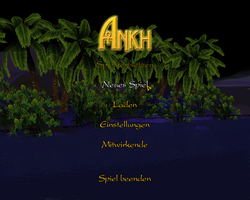
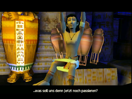
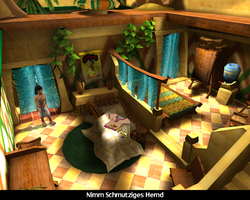
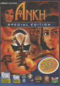

Ankh
Dieser Artikel wurde für die folgenden Ubuntu-Versionen getestet:
Ubuntu 14.04 Trusty Tahr
Zum Verständnis dieses Artikels sind folgende Seiten hilfreich:
Ankh  ist ein klassisches 3D-Adventure. Es erinnert an die Klassiker Monkey Island, Indiana Jones und Day of the Tentacle von LucasArts. Die moderne Grafik und der tolle Sound machen Ankh zu einem Erlebnis.
ist ein klassisches 3D-Adventure. Es erinnert an die Klassiker Monkey Island, Indiana Jones und Day of the Tentacle von LucasArts. Die moderne Grafik und der tolle Sound machen Ankh zu einem Erlebnis.
Ägypten. Vor langer, langer Zeit. Der junge Assil hat ein Problem: Er hat zu viel gefeiert und wurde mit einem Fluch belegt. Dabei wollte Assil nur einen lustigen Abend mit seinen Freunden verbringen - er hat sich Zugang zu einer Pyramide verschafft, ein rauschendes Fest gefeiert und ist prompt bei den Göttern in Ungnade gefallen. Nun lastet ein Fluch auf ihm und er muss sehen, wie er den wieder los wird.
Der Nachfolger Ankh II - Herz des Osiris ist ebenfalls unter Linux erschienen.
|  |  |  |
| Hauptmenü | Intro | Spielszene |
Installation¶
Installation auf 32-bit-Systemen¶
Zur Installation [4] des Spiels den Datenträger in das Laufwerk einlegen und das Installationsskript setup.sh ausführen [1]:
sh setup.sh
Im sich nun öffnenden Fenster den Pfad angeben und die Installation startet. Dem Menü wird ein Starter hinzugefügt.
Installation auf 64-bit-Systemen¶
Hinweis:
Das Spiel selbst liegt nur als 32-bit-Version vor, lässt sich jedoch anhand folgender Schritte auch auf einem 64-bit-System starten.
Die vom Spiel benötigten Pakete libfreetype6 und libasound2-plugins müssen explizit in der 32-bit-Version installiert werden [1]:
sudo apt-get install libfreetype6:i386 libasound2-plugins:i386
Nutzt man die freien Mesa-Treiber als 3D-Grafikkarten-Treiber müssen zusätzlich die Pakete libglu1-mesa und libgl1-mesa-dri in der 32-bit-Version installiert werden:
sudo apt-get install libglu1-mesa:i386 libgl1-mesa-dri:i386
Hinweis:
Für Nutzer eines LTS Enablement Stacks muss anstatt des genannten Pakets libgl1-mesa-dri:i386 das jeweilige Paket des aktuell verwendeten LTS Enablement Stacks installiert werden. Für Ubuntu 12.04 sind das ggf. libgl1-mesa-dri-lts-quantal:i386, libgl1-mesa-dri-lts-raring:i386 oder libgl1-mesa-dri-lts-saucy:i386.
Zur Installation [4] des Spiels den Datenträger in das Laufwerk einlegen und das Installationsskript setup.sh mit linux32 ausführen [1]:
linux32 sh setup.sh
Im sich nun öffnenden Fenster den Pfad angeben und die Installation startet. Dem Menü wird ein Starter hinzugefügt.
Patch¶
Einen Patch für das Spiel (12,9 MB) findet man auf liflg.org. Der Patch muss heruntergeladen, als ausführbar [2] markiert und eingespielt [1] werden:
./ankh-linux-x86-1.1.bin
Für 64-bit-Systeme muss dieser Befehl [1] verwendet werden:
linux32 ./ankh-linux-x86-1.1.bin
Probleme¶
Abbruch nach Intro (libz)¶
Bricht das Spiel nach dem Intro ab und es wird auf der Konsole u.a. folgender Fehlertext ausgegeben
symbol gzopen64, version ZLIB_1.2.3.3 not defined in file libz.so.1 with link time reference
so hilft es die Datei libz.so.1 im Installationsverzeichnis des Spiels unter bin/release/libs zu löschen oder umzubenennen. Dadurch wird nicht mehr die veraltete vom Spiel mitgelieferte Version der Bibliothek verwendet sondern eine neuere vom System bereitgestellte Version mit welcher das Problem nicht mehr auftritt.
ATI¶
Für ATI-Karten muss ein aktueller Treiber (8.32.5 oder neuer) installiert sein, ansonsten werden einige Dinge nicht dargestellt!
Schwarze Texturen¶
Manchmal kommt es in Schattenbereichen vor, dass Böden oder Wände komplett schwarz dargestellt werden. Hier hilft es den Detailgrad des Schattens auf "mittel" zu stellen. Der Fehler sollte nun nicht weiter auftreten.
Installation¶
Wenn die Fehlermeldung
bad interpreter: Permission denied
erscheint, gibt es zwei Lösungswege. Zum einen in der /etc/fstab die Option exec einfügen oder aber die Installation mit dem Befehl [1] starten:
/bin/bash ./setup.sh
Alternativ kann man auch den CD-Inhalt auf die Festplatte kopieren und von dort installieren.
Soundfiles¶
Im Spiel tauchen Fehlermeldungen zu fehlenden Soundfiles auf.
symbol lookup error /usr/lib/libvorbisfile.so.3:undefined symbol:vorbis_synthesis_idheader
Dieser Fehler lässt sich mittels des Patches beheben.
Sprache¶
Sofern man versehentlich die falsche Sprache nach der Installation ausgewählt hat kann man durch ändern der Datei Ankh-minimum.ini im Verzeichnis /PFADZUMSPIEL/Ankh/media den Wert language ändern um auf deutsch spielen zu können. Den Wert hierzu nach language=1 ändern.
Tastenkürzel¶
| Tastenkürzel | |
| Taste(n) | Funktion |
| Strg + Tab ⇆ | Aufgabenliste von Assil wird ein/ausgeblendet |
| Strg + Esc | Menü: Spielstand speichern/laden - Einstellungen - Spiel beenden ... |
| Strg + Einfg | PINA-Konsole wird geöffnet |

Infobox¶
| Ankh | |
| Genre: | Adventure |
| Sprache: |  |
| Veröffentlichung: | 2005 |
| Publisher: | Runesoft GmbH |
| Systemvoraussetzungen: | Prozessor mind. 1 GHz - mind. 512 MB RAM - mind. 900 MB Festplattenspeicher - 3D-Graphikkarte (32+ MB RAM) |
| Medien: | CD (1) |
| Strichcode / EAN / GTIN: | 4041098005047 |
| Läuft mit: | native Loki |

- Erstellt mit Inyoka
-
 2004 – 2017 ubuntuusers.de • Einige Rechte vorbehalten
2004 – 2017 ubuntuusers.de • Einige Rechte vorbehalten
Lizenz • Kontakt • Datenschutz • Impressum • Serverstatus -
Serverhousing gespendet von